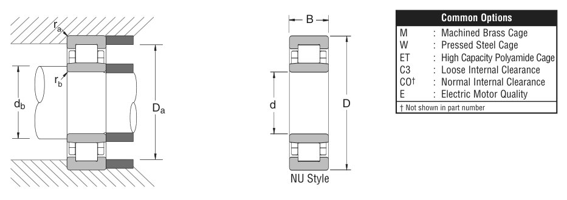

Original catalogue drawing - NSK catalogue, page 55

Scanned from the manufacturer catalogue page listing this part number. All part numbers printed on that table share the same drawing.
Scale cross-section
Blue = inner / outer ring, yellow = rolling element. Drawn to scale from this part's own
dimensions for selection reference only - not a manufacturing or assembly drawing.
Dimension table (mm / inch)
Symbol
Dimension
mm
inch
d
Bore diameter
35
1.378
D
Outside diameter
80
3.1496
B
Inner-ring / bearing width
21
0.8268
Notes
Cylindrical roller entries from the NSK inch catalogue are series numbers covering the N / NU / NJ / NUP / NH prefixes of the same size. Weights are given in kg. Load ratings are shown in both the original catalogue units and the converted value (1 N = 0.2248 lbf). Data is provided for selection reference only - confirm against the latest official catalogue before ordering.
Main dimensions
Bore d (mm)
35
Bore d (in)
1.3780
Outside dia. D (mm)
80
Outside dia. D (in)
3.1496
Width B (mm)
21
Width B (in)
0.8268
Load ratings & speeds
Basic dynamic load rating Cr (lbs)
11100
Basic static load rating Cor (lbs)
10600
Limiting speed - grease (rpm)
8,000
Limiting speed - oil (rpm)
9,500
Weight
Weight (kg)
0.449
Mounting dimensions (fillets / shoulders)
Fillet ra max (in)
0.059
Fillet rb max (in)
0.039
Shaft shoulder da min (in)
1.693
Housing shoulder Da max (in)
2.835
Shaft shoulder db min (in)
1.634
Shaft shoulder db max (in)
1.732
Housing shoulder Db min (in)
2.756
Housing shoulder Db max (in)
2.894
Bearing life (ISO 281 basic rating life)
C / P
Equivalent load P (N)
L10 (106 rev)
L10h at 2,600 rpm
4
12,344
102
651
6
8,229
392
2,516
8
6,172
1,024
6,564
10
4,938
2,154
13,810
15
3,292
8,323
53,356
Basic rating life per ISO 281: L10 = (C/P)10/3 with C = 49,375 N. Hours = L10 x 106 / (60n). Life-modification factors for lubrication, contamination and temperature (aISO) are not included.
Source & traceability
Brand
NSK
Source catalogue
NSK inch product catalogue
Catalogue page
p.57 (dimensions) / p.58 (ratings)
Dimensions in inches and millimetres, load ratings in lbs.
Send us the quantity you need and we will come back with price and
lead time, normally within 24 hours. Equivalent parts from other brands can be quoted at the same time.